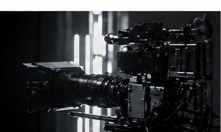
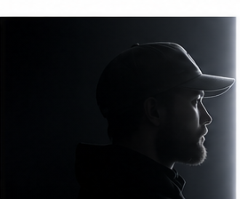
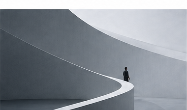

CommercialScroll direction 01
Header drops with scroll.
Шапка сначала большая и воздушная, потом мягко опускается, становится компактной и получает линию прогресса.
Scroll
Scroll direction 02
Кадры появляются как монтажные планы.

Portrait
Brand StoryScroll direction 03
Header changes on dark.
Когда секция темная, шапка переключается в светлый режим. Это можно сделать очень чисто и дорого.Scroll direction 04
Работы как интерактивная лента.
Scroll direction 05
Light is not decoration. Frame is not a container. Story is the movement between them.
Scroll direction 06